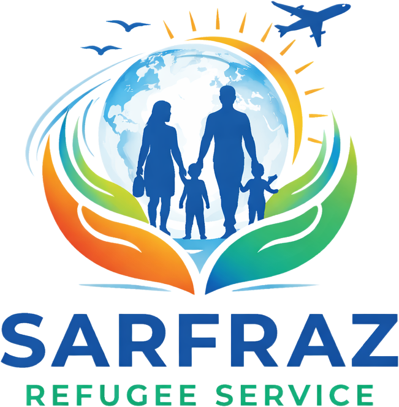

ویزای بشردوستانه
ویزای بشردوستانه استرالیا ۲۰۲۶
تغییرات مهم - بدون نیاز به اسپانسر | ثبتنام آنلاین
تغییرات جدید ۲۰۲۶
برنامه ویزای بشردوستانه استرالیا در سال ۲۰۲۶ با تغییرات مهمی همراه شده و روند درخواست برای متقاضیان آسانتر گردیده است. یکی از مهمترین تغییرات این است که متقاضیان دیگر نیاز به اسپانسر ندارند و افغانها میتوانند بهصورت مستقل درخواست خود را ثبت نمایند.
همچنین، سیستم درخواست اکنون آنلاین شده و متقاضیان میتوانند فورم مربوطه را از طریق اکانت آنلاین تکمیل و ارسال کنند. این تغییر باعث شده روند درخواست سریعتر، سادهتر و قابل دسترستر شود. با وجود آسانتر شدن روند، تکمیل دقیق معلومات و ارائه اسناد درست هنوز هم بسیار مهم است.
این برنامه یک فرصت مهم برای افرادی است که به دلیل تهدیدات امنیتی و شرایط دشوار، نیاز به حمایت بشردوستانه دارند. متقاضیان میتوانند با آمادهسازی درست اسناد و ثبت درخواست در زمان مناسب، شانس خود را برای دریافت این ویزا افزایش دهند.
افراد واجد شرایط
- فعالان مدنی
- زن از تحصیل مانده
- زنان فعال حقوق بشر
- زنان اقلیتهای مذهبی
- خبرنگاران
- افراد آسیب دیده از جنگ
- ورزشکاران
- نظامیان پیشین
- اقلیتهای مذهبی (هزارهها، ساداتها، سیکها، عربها)
- مربیان ورزشی
- کارمندان دفاتر خارجی
زمان پروسس
بین سه ماه کیس شما در جریان پروسیس قرار میگیرد و کیس شما نظر به اولویت کاری وزارتخانهها است در چند مدت پروسیس میشود. هر کس متفاوت پردازش میشود.
اسناد ضروری برای ثبت نام
- تذکره
- پاسپورت
- ایمیل آدرس با پسورد
- شماره تماس
- موقعیت فعلی
- چند کشور سفر کردی
- وظیفه و شغل
- وظیفه قبل
- کدام حزب بودن
- چند لسان بلد هستید و یا سایر فامیل شما
- وضعیت کنونی مجرد یا متاهل
- آیا کسی در استرالیا دارید
- اسنادهای شغلی دارید
- چندبار مورد تهدید قرار گرفتی؟
- نام مادر و پدر
اگر فامیل درخواست میکنید
در صورت متاهل بودن، مدارک مانند تذکره فرزندانتان را ارسال کنید.
ثبت درخواست از طریق واتساپ